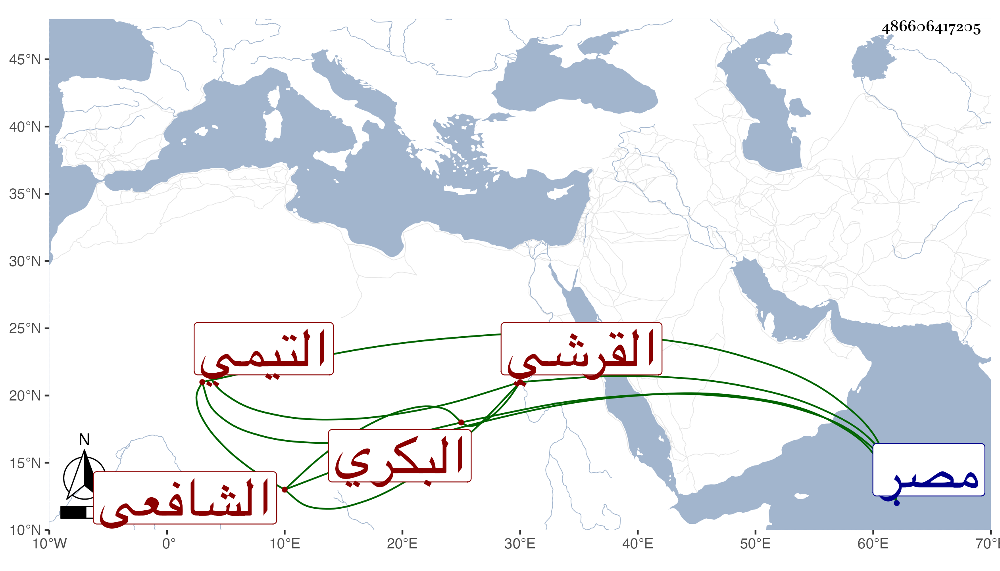

0902Sakhawi.DawLamic.ITO20230111-ara1.EIS1600.486606417205
Biography ID: 486606417205
1046
علي بن محمد بن عبد الوارث بن محمد بن عبد العظيم النور بن الجمال بن الزين القرشي التيمي البكري الشافعي عم النجم عبد الرحمن بن عبد الوارث . ولد سنة ثلاث وأربعين وسبعمائة واشتغل بالعلم وأخذ الفقه عن ابن عقيل وغيره وسمع من العز بن جماعة القاضي ومهر في الفقه خاصة وكان كثير الاستحضار قائما بالأمر بالمعروف شديدا على من يطلع منه على أمر منكر بحيث جره الإكثار منه إلى أن حسن له بعض أصحابه أن يتولى الحسبة فولي حسبة مصر مرارا وامتحن بذلك حتى أضر ذلك به ومات منفصلا عنها في ذي القعدة سنة ست عن ثلاث وستين سنة . ذكره شيخنا في أنبائه وقال في معجمه : أخذت عنه من فوائده ، والمقريزي في عقوده باختصار .
